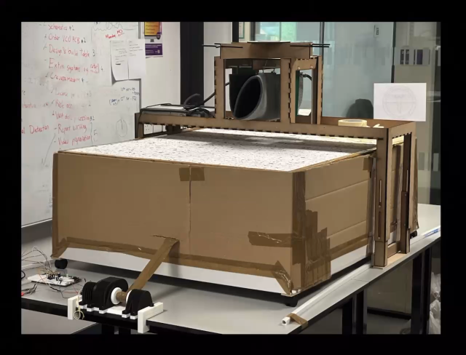

My name is Benjamin Woodruff, I'm a Mechatronics graduate currently studying the University of Manchester's MSc in robotics course. I'm part of RAINZ CDT as one of their first cohorts, and will be hopefully performing my responsibilities as a postgraduate researcher this coming year.
I chose research, and academia as a whole, because I enjoy the engineering process. I'm passionate about solving the big problems our society faces and using my skills to hopefully help people worldwide is my dream.
Research also allows me to teach others the same things I find interesting, while also continuing to learning myself and explore the forefronts of human knowledge
My current interests pertain to my research at the University of Manchester, namely sustainability, and how robotics and AI can help us achieve net zero carbon emissions . To this end, I'm currently researching automation within renewable energy, and how robots might be used in maintenance and inspection to help promote clean and reliable transfer and generation of power. Specifically, how we might improve autonomous maintenance robots with more intelligent designs and improve the quality of the data they recieve.
The Robotics System Design Project, is a project I was part of, where we as a team made a colour seeking robot. I was in charge of many different things like coding the manipulator, systems intergration, mechanical design and communication!
Contribution: As part of a team, helped deisgn and test the code.
As part of a team I helped with controlling a drone! We got our code put into an actual drone and it went pretty well! (Once we sorted out the errors). Very enjoyable.
Goal: Using a premade GUI, code the A* Algorithm from scratch using no modules.
Contribution: Created the Algorithm.
I was tasked with creating A star from scratch! No libraries allowed! Just the original paper detailing A Star, though that doesn't mean I didn't make my own improvements! (Open and closed set have a lot of overlap you can eliminate)
Goal: Create a video explaining the UN sustainable Development goals.
Contribution: Made, voiced and edited the video.
A video I made regarding the sustainable development goals and how they are associated with robotics. This was more about science communication than being perfectly sustainable, but it was interesting to learn how I might help sustainability in the future.
Goal: Test out available structure from motion code.
Contribution: Downloaded and ran the code (see Github below), took videos.
A personal project for me. Where I explored the usage of structure from motion using publicly available software online. It was hard to get anything working, since most software uses graphics card acceleration for a lot of the calculations, which I lacked access to. Thankfully I found a version that I could run purely on a CPU, even if it took forever.
Contribution: Downloaded and ran the code (see Github below), proccessed images.
An addition to structure from motion I explored, where based on the data retaining to the images and camera coordinates, the scene can be represented by blobs of colour or gaussians of different sizes in 3d space. Resulting in being able to see the scene from new angles or reconstruct an entire 3D scene from purely 2D images.
Goal: Follow the tutorial to construct a basic navigating robot.
Contribution: Made, ran and controlled the basic wheeled robot.
I programmed a simple wheeled robot and implemented navigation and obstacale avoidance within ROS2 (Version: Humble). Sending it navigation goals the robot then traversed to while avoiding the items in the way.
MATLAB Workshop for W.E.S. (Women in Engineering Society)
Goal: Host a series of workshops on MATLAB to help those from diverse backgrounds.
Contribution: I was the sole host, preparing material each week alongside providing help and assistance during the sessions.
I wanted to try teaching, and last year I was given an oppourtunity to introduce a small class of people to MATLAB, a program I've a lot of experience. Teaching was hard since I had come with a slide-deck on the first session, only to find out there was no where to present them. But I adapted and made adjustments for the next session. The workshop lasted four weeks and we gave everyone who completed it our own unofficial certificate of completion as a reward.

MEng Project
Goal: Design a model of a crevasse and determine the optimal design for a radar.
Contribution: Team Leader, Systems Intregration.
For my MEng Project: as part of a team, we were tasked to create a device that could detect crevasses in an arctic enviroment. We were limited in our resources, so we chose to make a model of a crevasse and use that to determine the best method for detecting cavities. I was team lead and was also responsible for the interfacing between devices. I learnt a lot of non-technical soft skills from this project, namely team management, how to deal with expecations and how to communicate
Goal: Inspect how control for a double rotary inverted pendulum differs when sensing is limited.
Contribution: Sole contributor, wrote simulation & control.
A more controls based and linear alegbra project. This was made using MATLAB, Simulink and an addon called Simscape. I compared the outputs of the simulation to one solved using a set of differential equations that are iterativelty repeated. My project in particular looked at the dynamics when only the bottom angular encoder gave readings, which was unsuprisngly much harder than if you had access to all the system angles. If you want to see the Github Repository for this project click here!